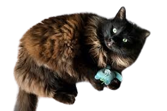
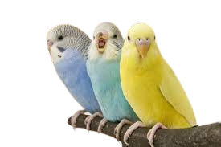
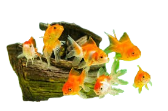

Dogs are highly social, domesticated mammals known for their loyalty, versatility, and companionship. As descendants of wolves, they were among the first animals to be domesticated by humans more than 15,000 years ago. Today, dogs are valued not only for their ability to perform various tasks, including herding, hunting, protection, and assistance, but also for their unwavering companionship and capacity to enhance the lives of their human counterparts.
Special Skills:
Companionship: Dogs are renowned for their loyalty and companionship, providing unconditional love and support to their owners.
Assistance and Service: Trained dogs can perform a wide range of services, including guiding the visually impaired, assisting people with disabilities, detecting medical conditions, and providing therapy and emotional support.
Protection: Dogs have a natural instinct to protect their pack, making them excellent protectors of their homes and families.
Highly Trainable: Dogs' desire to please their owners, combined with their intelligence, makes them highly trainable for various tasks, tricks, and behaviors.
Social and Active: Dogs often encourage outdoor activities and socialization, promoting a healthy lifestyle for their owners.
Special Skills:
Cats are small, carnivorous mammals known for their agility, grace, and independence. They have been domesticated by humans for thousands of years, originally valued for their prowess in hunting and controlling pests. Today, they are cherished as companions for their unique personalities, comforting presence, and the joy they bring to their human counterparts.
Special Skills:
Pest Control: Cats are natural hunters and can help keep the population of rodents and pests at bay in a household environment.
Self-Cleaning: Cats are meticulously clean animals, spending a significant portion of their day grooming themselves. This behavior reduces the need for regular baths and helps keep their coat healthy and free of parasites.
Low Maintenance: Compared to many other pets, cats require relatively less daily care and attention. They are independent creatures that can entertain themselves and do not require daily walks outside.
Emotional Support: Cats are known for their ability to provide emotional support and companionship. Their presence can reduce stress, anxiety, and loneliness in their human companions.
Adaptability: Cats can thrive in various environments, from spacious country homes to compact city apartments, making them suitable pets for a wide range of living situations.

Special Skills:
Domestic birds encompass a wide range of bird species that have been kept as pets or for production purposes. These include parrots, canaries, finches, and pigeons, among others. Birds are admired for their vibrant colors, melodious songs, and the ability to mimic human speech, especially in the case of parrots. They offer a unique kind of companionship through their lively personalities and interactive behaviors, making them fascinating pets for bird enthusiasts and animal lovers alike.
Special Skills:
Vocal Abilities: Many bird species, particularly parrots, are known for their ability to mimic human speech and other sounds, which can provide entertainment and companionship to their owners.
Colorful and Aesthetic Appeal: Birds come in a dazzling array of colors and patterns, adding visual beauty to any environment.
Intellect: Birds, especially parrots, are highly intelligent and capable of solving complex problems, which can be nurtured through interactive play and training.
Social Interaction: Birds often form strong bonds with their owners and require social interaction, which can help reduce feelings of loneliness and isolation.
Longevity: Many bird species have long lifespans, providing companionship for many years, with some parrots living up to 50 years or more.

Special Skills:
Domestic fish encompass a diverse group of aquatic species kept in home aquariums or ponds for decoration, hobby, or companionship purposes. Popular among these are tropical fish like the Neon Tetra, Angelfish, and Betta, as well as freshwater species such as Goldfish and Guppies. Fishkeeping appeals to those fascinated by the underwater world, offering a slice of aquatic life that can be both calming and mesmerizing to observe.
Special Skills:
Aesthetic Appeal: Fish come in a variety of shapes, colors, and sizes, adding visual interest and beauty to any space.
Stress Reduction: Watching fish swim gracefully in their aquatic environment is known to have a calming effect, reducing stress and anxiety in observers.
Educational Value: Maintaining an aquarium provides educational insights into aquatic ecosystems, water chemistry, and the biology of different fish species.
Minimal Space Requirements: Fish are suitable pets for people with limited space, as they can be accommodated in small apartments or offices.
Diverse Ecosystems: Advanced hobbyists can create complex aquatic ecosystems, such as reef aquariums, that support not only fish but also live plants, corals, and invertebrates.

Special Skills: